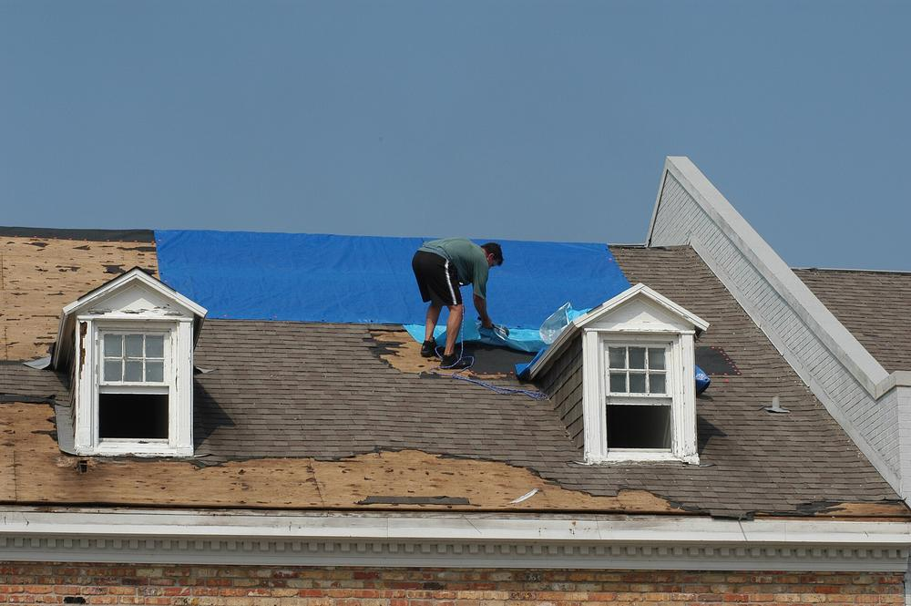
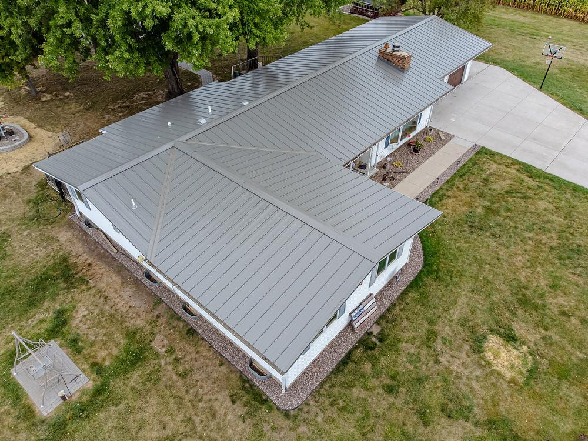
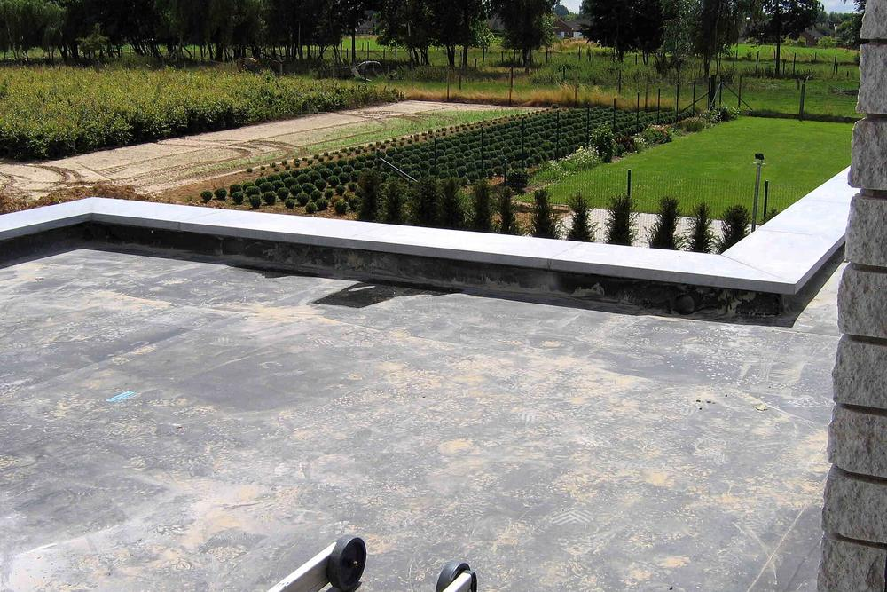
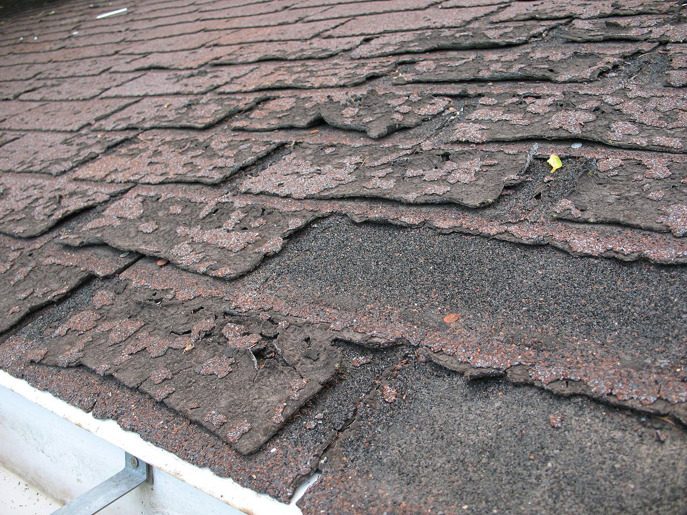

Faircloth Roofing services
Roof replacement
Tear-off to the deck, a complete system from one manufacturer, and a clean yard by dinner. Most homes take one to two days.
Overview
What you get
A replacement is the biggest job a roof ever gets, so we treat it like one. We strip the old roof down to the deck, fix what's underneath, and build a complete system (underlayment, flashing, ventilation and shingles from one manufacturer) so the warranty covers all of it, not just the shingles.
Before we start you get a written scope with the material, color, decking allowance and price. When we finish you get a photo report of the work you can't see from the ground.
- Full tear-off. Every old layer comes off so we can see and fix the deck.
- Decking repair. Soft or rotten sheets are replaced at a per-sheet price agreed up front.
- Underlayment and ice & water shield. Synthetic felt everywhere, peel-and-stick in valleys and around every penetration.
- New metal and flashing. Drip edge, step and counter flashing, pipe boots and chimney flashing.
- Balanced ventilation. Ridge vent matched to soffit intake so the attic doesn't cook your shingles.
- Cleanup and warranty. Magnet sweep of the yard and driveway, then we register your manufacturer warranty.
Options
Pick the roof that fits your house
Prices are demo ranges per installed square (100 sq ft). Your inspection turns them into a firm quote.
Architectural shingle
The default for most homes here: thick, dimensional, rated for high winds when installed to spec.
3-tab shingle
The budget option. Flat look, lighter weight, and the shortest life. Good for rentals and outbuildings.
Standing-seam metal
Costs more up front and lasts about twice as long. See our metal roofing page for the details.
Synthetic slate
The look of slate at a fraction of the weight, so most houses need no extra framing.
Natural slate
For historic homes and owners who never want to do this again. Needs a structure that can carry it.
Cedar shake & tile
Specialty roofs we repair and replace, including matching existing tile on additions.
How it works
Start to finish
Signs it's time
- Cracked, curling or missing shingles in more than a few spots.
- Granules piling up in the gutters and bare, shiny patches on the roof.
- Daylight or stains in the attic or a sagging section of roof deck.
- A roof past 20 years especially original builder-grade 3-tab.
Free inspection
We measure the roof, check the attic and decking, and photograph what we find.
Written proposal
Material, color, decking allowance, start date and one price. No pressure, no expiring deals.
Delivery
Shingles arrive a day or two ahead. We tarp shrubs and protect AC units and pools.
Build day
Tear-off, deck repair and dry-in happen the same day, so your house is never left open.
Walk-through
We walk the finished roof and yard with you, then send the photo report and warranty.
FAQ
Common questions
Don't see yours? Call and a real roofer will answer.
Can you put new shingles over my old ones?
Code allows a second layer in some cases, but we almost always recommend a tear-off. Overlays hide rotten decking, add weight, and many manufacturers won't give their best warranty on them.
Do I need to be home on build day?
No. We need access to the driveway and an outside outlet. Most owners are home for the walk-through at the end.
What if it rains during the job?
We only open as much roof as we can dry in that day, and we watch the radar. If a storm pops up, the crew tarps the open section before they leave.
Do you pull the permit?
Yes. We pull the permit wherever your town or county requires one and schedule the inspection.
Where we work
Roof replacement near you
Free inspections in Fayetteville and every town within 50 miles.
Harnett County
Robeson County
Sampson County
Moore County
Hoke & Scotland counties
Lee & Johnston counties
Bladen County
More services
One crew for the whole house

Storm & hail repairTarping, wind and hail, insurance claims
Metal roofingStanding seam and exposed-fastener panel
Commercial flat roofsTPO, EPDM, PVC, coatings
Leak repair & inspectionsLeak tracing, flashing, roof reports GuttersSeamless aluminum, guards, downspouts
GuttersSeamless aluminum, guards, downspoutsFree inspection
Book your free roof inspection
Tell us what's going on and we'll call to set a time, usually within one business day. demo